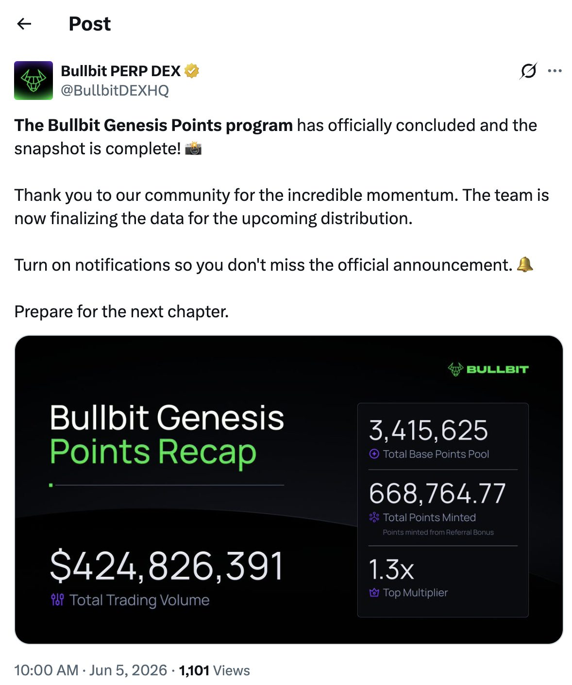
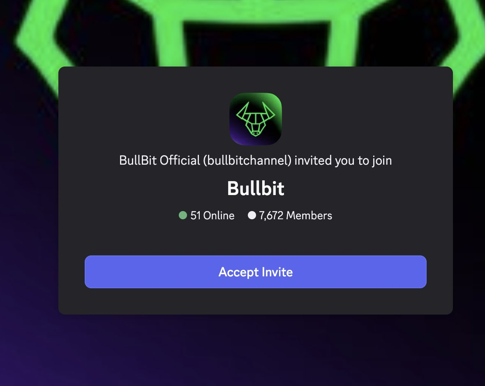
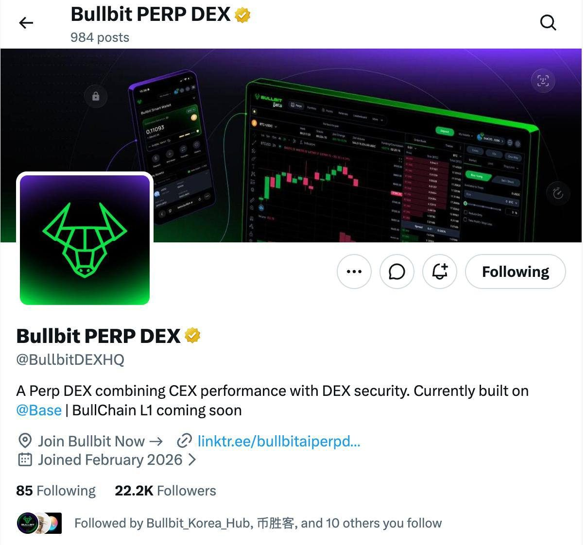
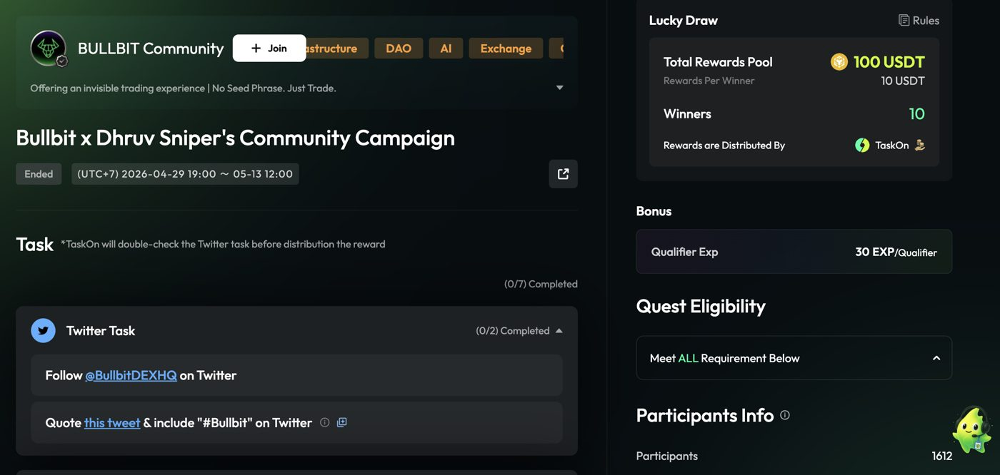
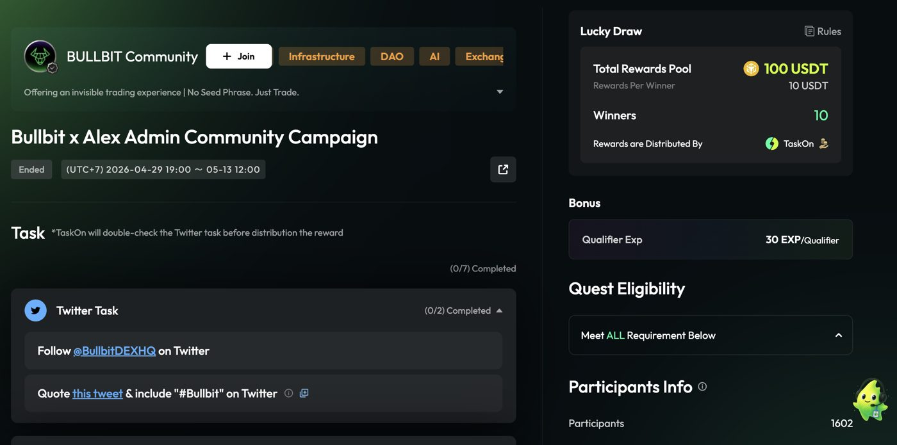
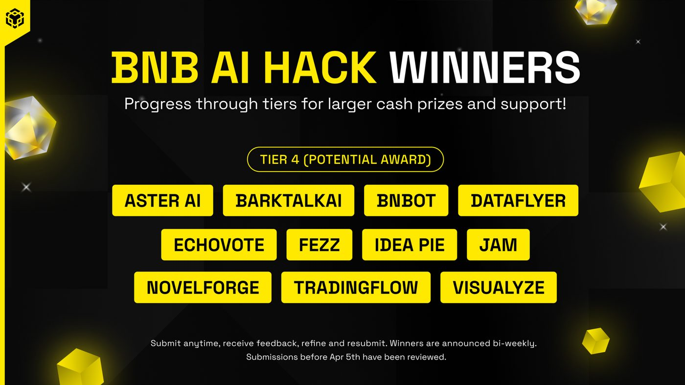
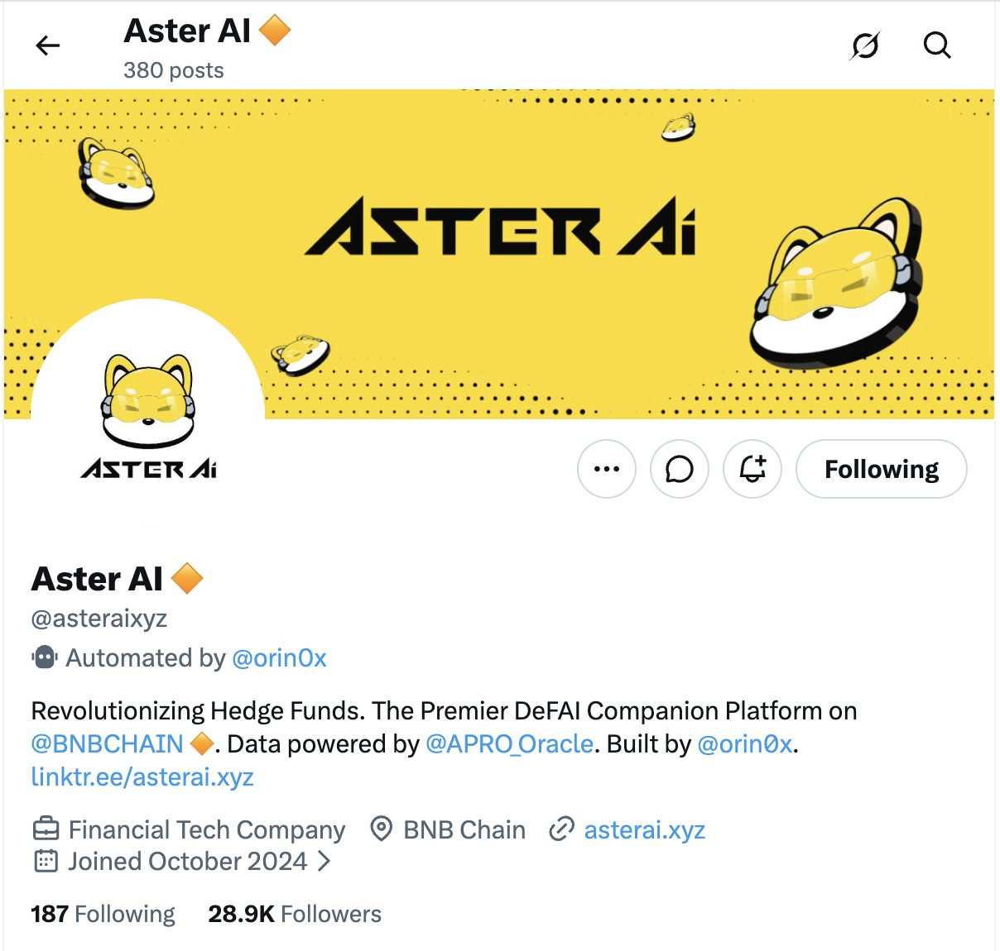
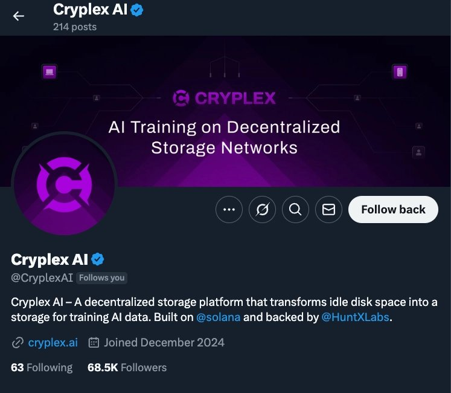
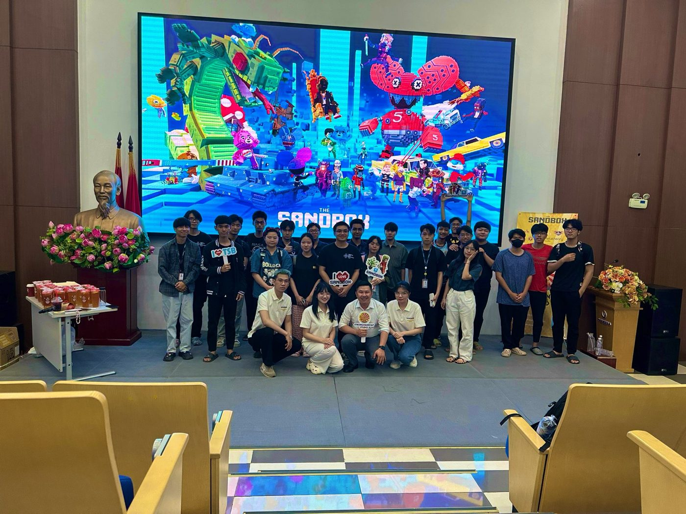
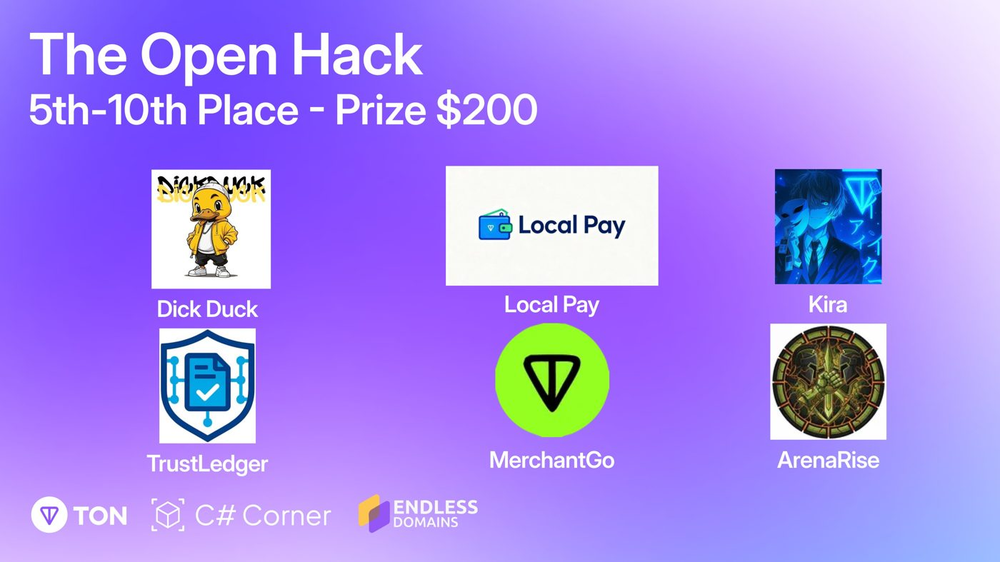

Web3 Growth Marketer · builds own AI agents & growth tools
Web3 growth marketer with 4+ years in crypto. Early marketing hire at Bullbit, where I designed the points and community programs behind $424.8M in real user trading volume and helped take the product through its TGE and Layer 1 launch. Before that, agency work on X growth, KOL campaigns and PR, with a 500+ KOL network across Korea, Russia/CIS and Southeast Asia. I also build my own tools: AI agents for KOL discovery, campaign research and funnel tracking, and an AI trading agent that made Top 100 at Binance's Agent OS hackathon.
I joined Bullbit as an early marketing hire, shortly after it pivoted to a Perp DEX. Working with the founding team, I designed two programs that became key to its growth, Genesis Points and the Discord Role system, and went on to help lead marketing through beta, public launch, the $BUBI TGE and the launch of Bullchain, Bullbit's own Layer 1.
Alpha, building the foundations · 12/2025 – 01/2026
Designed the go-to-market around two programs that carried through to TGE: Genesis Points (volume-based airdrop points) and a Discord Role system tied to airdrop eligibility (roles, Genesis)
Genesis Points recorded $424,826,391 in real user trading volume by its snapshot on 5 Jun 2026 (recap), at a reward cost of about $94 per $1M volume, under 1/5 of the taker fee; ~90% of airdrop recipients kept trading afterwards
First community campaign with ~3,000 participants (TaskOn), a Christmas event, weekly role-earning events and AMAs on Binance Live and X Spaces (post)
Grew Discord from 0 to 7,674 members, organically

Official recap: $424,826,391 trading volume from the Genesis Points program I designed (post)

Bullbit Discord: 7,672 members, built from zero
SHIPPED
Genesis Points: results and efficiency
A volume-based points program that converted into the $BUBI airdrop at TGE, run for about four months from private beta to the snapshot. I designed it with the founding team. Program mechanics are covered by NDA; the outcomes below are what it delivered.
$424.8Mtrading volume, 100% from real users
~$94reward cost per $1M volume (1M $BUBI ≈ $40K at the $0.04 listing price), under 1/5 of the 5 bps taker fee, so the program paid for itself at least 2x in trading fees
~10,000wallets took part; 500 qualified traders received the airdrop
~90%of airdrop recipients kept trading after the airdrop
Beta & public launch · 02/2026 – 04/2026
Relaunched Bullbit on X as @BullbitDEXHQ: 0 → 22.2K followers at peak, organic
Self-hosted X giveaway ($200 USDC + 5 whitelist spots, post): 3.3K replies and 58K views in 48 hours, one of many we ran without a quest platform
Bull Blitz trading competitions (S1, S2): $61M volume on $2,457 in prizes, about $40 per $1M volume. Season 2 grew volume 6.8x and traders 2.2x over Season 1, while the cost per $1M volume halved:
Season 1 12–26 Mar
Season 2 9 Apr – 13 May
Traders
273
609
Volume
$7.86M
$53.14M
Prizes paid
$565
$1,892
Cost per $1M volume
~$72
~$36
Partner co-marketing campaigns with the Dhruv Sniper and Alex Admin communities: 3,214 participants (quest 1, quest 2)

X @BullbitDEXHQ at 22.2K followers, from a new account

Bullbit × Dhruv Sniper: 1,612 participants

Bullbit × Alex Admin: 1,602 participants
DELIVERED$BUBI TGE · May – Jul 2026 · ~$80K budget
TGE quest "Bull Genesis: The First Move": 4,228 participants
DELIVEREDBullchain L1 public testnet · Sep – Oct 2026 · $2.5K campaign budget
$48.5B cumulative testnet volume in 6 weeks (peak day $8.8B on 8 Oct), 45M transactions from ~22,000 wallets, on a $2.5K campaign budget, about $0.11 per wallet (week 6 recap)
Bug bounties on HackenProof (85 hackers, 414 submissions) and First Dollar (30 testers, 301 feedback reports)
Korean push: 36 global and Korean articles, 30+ Naver blog and KOL posts, Korea Blockchain Week coverage and 300+ seeded mentions on X and Threads (full list)
Grew X to ~20K followers and Telegram to 20K members, organically, working alongside the client's in-house offline team
Built a 70+ member KOL and ambassador program; ran 10+ campaigns; co-developed the whitepaper and core narrative
Organized weekly AMAs, including on Binance Live (example)
Introduced the team to investors (CGV, Eureka Partners, w3.fund, GAINS Associates, DuckDAO, Genesis Capital) and ran the press for its $8M strategic round across 8+ crypto media
Opened doors to Four.Meme, top BNB KOLs such as Captain BNB, and ecosystem partners

BNB AI Hack: Aster AI selected for Tier 4 (Potential Award), 28 Apr 2025 (BNB Chain blog)

Aster AI on X today: 28.9K followers (peak 50K+ during the campaign)
DELIVEREDCryplex AI (AI × decentralized storage, Solana)
X follower growth only, as the project's agency: grew @CryplexAI, a Solana project backed by HuntX Labs, from zero to 68.5K followers

Cryplex AI on X: 0 → 68.5K followers
DELIVEREDParadex (Perp DEX on Starknet)
Managed a Korean Telegram KOL campaign for Paradex's zero-fee perps, XP Warzone Season II and the Badger Brawl trading competition, ahead of the $DIME TGE (Sep 2025)
Built and managed a network of 500+ KOLs, focused on Korea and Russia/CIS
Ran end-to-end growth for two NFT gaming clients: each reached 50K+ X followers and $2M+ in NFT sales (client names on request)
Managed a coordinated KOL and X thread-writer campaign for Matr1x ($FIRE), an FPS game backed by Polygon and Animoca Brands, timed with its Burn Utility announcement on 19 Apr 2024. The three notable posts below alone reached 80K+ views; on campaign day $FIRE hit an intraday high of +28% and closed +11.6% (Bybit daily data)
Part of a very small early team; brought my own KOL network and communities to grow The Sandbox in Vietnam. Member of the organizing team for offline events: staffing, partner outreach and guest invitations.
Date
Event
Role
Link
16 May 2025
Official LAND Sale AMA, The Wildlands Adventure (online)
Official LAND Sale AMA: speaker as Doctor D, Co-Founder of Airdrop WarriorAlpha Season 5 streaming session with Namlong DAO, 10 Alpha Pass giveaway

VoxEdit training course at Phenikaa University, May 2024
AI tools, agents & builds
I don't wait for a tool to exist. When a campaign needs something, I build it, usually with Claude. These are the agents and tools I use in my own growth work, followed by the products I've shipped at hackathons.
BUILTKOL discovery agentFinds and shortlists KOLs by market, niche and real engagement, using Kaito and Moni data through their APIs, so outreach starts from a ranked list instead of a guess.
BUILTCampaign research agentResearches competitor campaigns, narratives and reward designs before I plan one, and drafts the brief I then edit.
BUILTTraffic & funnel trackingMy own trackers for traffic and funnels on my own parameters: from post and KOL to visit, wallet, trade. Campaigns are judged on users and volume.
BUILTSelf-hosted X questsQuest campaigns run on X or the project's own platform, with TaskOn only to bootstrap and a Grok bot for fast research.
BUILTBinance Agent OS Mini Hackathon · Track A · Top 100
Pay-Then-Act
"An agent that only spends when it actually needs to." Coded solo. Product · GitHub · Video demo
Binance Track A winners list, with a reply from Binance Intern (post)
Top 100, Binance Agent OS Mini Hackathon, Track A (Oct 2026). Pay-Then-Act, an AI trading agent I coded solo: it scans ~100 USDT pairs on free data, pays a few cents for a premium signal (x402 on BSC) only when the free read is inconclusive, then proposes one order for a human to approve. Python · Binance MCP Server · x402. Product · GitHub · Demo · Winner post
Floor Watch. Real-time low-cap screener on Binance's public WebSocket, coded solo. Live
Top 5, The Open Hack 2025 by TON, finals at India Blockchain Week 2025 (Dec 2025). Telegram Mini App game on TON, built with a 4-person team. App · Winners post

The Open Hack 2025 by TON: winners announcement (post)
W3W (Web3 World), Business Development, 10 – 11/2023: onboarded 10+ retail merchants incl. GS25 for NFT tickets and memberships; 3,000+ founder & KOL community in 1 month
Atlas Exchange, Marketing Specialist, 04 – 08/2023: grew a Vietnamese trading sub-community from 0 to 10K+ members in 4 months, organically
Fam Central (launchpad), Community Manager, 09/2021 – 03/2023: grew and sustained a 30K+ organic community
Bullchain Korean coverage
Testnet and mainnet coverage across Korean Telegram KOLs, Naver blogs and Korea Blockchain Week, plus 300+ seeded mentions on X, Threads and other platforms.